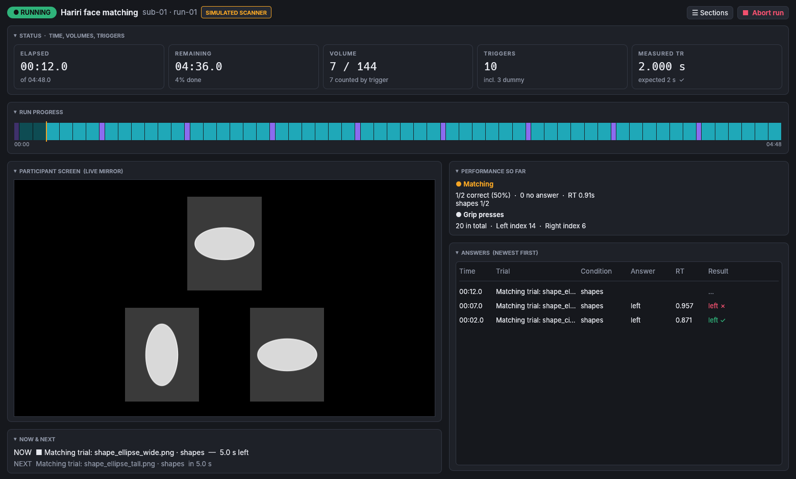

Design and run fMRI paradigms
Build the run on a timeline like a video edit, preview exactly what the participant will see, then press
Run in scanner – button presses and ratings land in BIDS-style events.tsv files.

Download
Windows · your computer
Windows 10 or 11, 64-bit
Download .exe
- Double-click ParadigmShift-windows-x64.exe.
- If Windows shows “Windows protected your PC”: More info → Run anyway.
macOS · your computer
macOS 11 or newer, Apple Silicon and Intel
Download .zip
- Unzip and drag ParadigmShift.app into Applications.
- If macOS refuses to open it: System Settings → Privacy & Security → Open Anyway (macOS 14 and older: right-click → Open).
Linux · your computer
64-bit (x86-64)
Download .tar.gz
tar xzf ParadigmShift-linux-x86_64.tar.gz./ParadigmShift-linux-x86_64/paradigmshift

Ready-made tasks (Hariri, emotion regulation, MID, Go/No-Go, Stroop, N-back …), quick designs from your own pictures, trigger and button boxes of any manufacturer, presentation mode and more – the full description and manual are on GitHub.
Read the full description